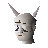

Hazeel Cult
Scripts in
scripts/quests/quest_hazeelcult/NPCs involved

HazeelItems involved
Involvement is derived from identifiers referenced by the quest scripts.
scripts/quests/quest_hazeelcult/
HazeelInvolvement is derived from identifiers referenced by the quest scripts.